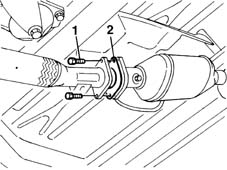
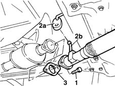

1076B34 front catalytic converter attachment seal - replace
- Path
- Procedures > 10 ENGINE UNIT > 1076 EXHAUST PIPES AND SILENCERS > 1076B exhaust pipes and silencers > 1076B34 front catalytic converter attachment seal - replace
- Kind
- repair procedure (removal / refitting; the operation number is the code)
- Applies to
- all engines; all production periods
- Interactive page
- https://sloeber94.github.io/elrnDB-fMltpl/en/#/2891292
Applies to: engines: 1.6 16v; all production periods
 Removing
Removing
 Refitting
RefittingPlace the car on a ramp.
1. Undo the bolts fixing the exhaust pipe to the catalytic converter.
2. Separate the pipe from the catalytic converter and remove the attachment gasket

Applies to: engines: 1.6 16v; all production periods
Refitting
RemovingFit a new attachment gasket.
Tighten the bolts securing the catalytic converter to the exhaust pipe.
 | Fastening | Component | Ø | Value (daNm) |
|---|---|---|---|---|
- | Bolt | EXHAUST PIPE TO ENGINE | M8 | 2.4 |
Remove the vehicle from the ramp.
Applies to: engines: 1.9 JTD 8V; all production periods
Removing
RefittingPlace the car on a ramp.
1. Undo the bolts securing the pipe to the catalytic converter.
2. Release rubber block (2a) from pipe pin (2b).
3. Remove the gasket from its seat.

Applies to: engines: 1.9 JTD 8V; all production periods
Refitting
RemovingFit the gasket into its seat on the catalytic converter.
Secure the pin to the rubber block.
Tighten the bolts securing the pipe to the catalytic converter.
| Fastening | Component | Ø | Value (daNm) |
|---|---|---|---|---|
- | Bolt | EXHAUST PIPE TO ENGINE | M8 | 2.4 |